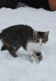
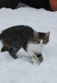
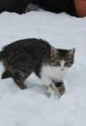

A quick and simple service for getting pictures of kittens for use as placeholders in your designs or code Just put your image size (width & height) after our URL and you'll get a placeholder.
Like This:
http://placekitten.com/200/300
or:
http://placekitten.com/200/300
